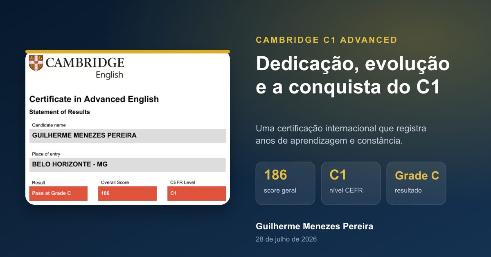
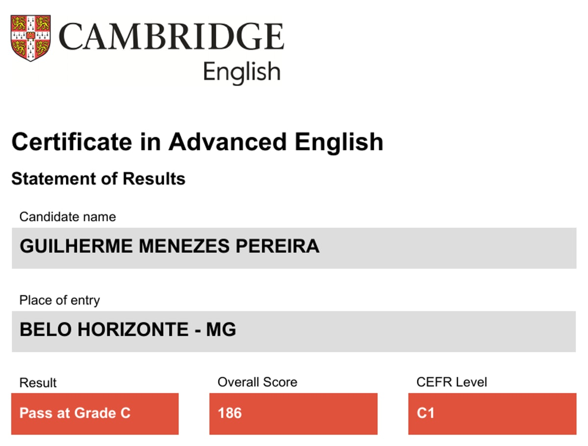
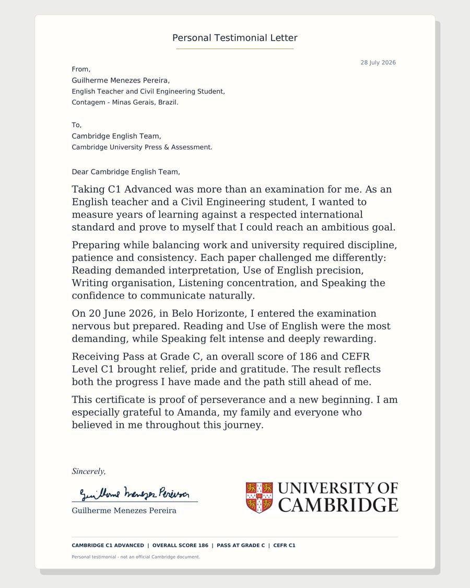

Introdução
Receber o resultado do Cambridge C1 Advanced foi um daqueles momentos em que um número representa muito mais do que uma nota. O score geral 186, a aprovação Pass at Grade C e o nível CEFR C1 registraram oficialmente uma trajetória construída com estudo, prática, trabalho e constância.
A prova aconteceu em 20 de junho de 2026, em Belo Horizonte. Cheguei ao exame nervoso, mas preparado. Quando o resultado saiu, senti alívio, orgulho e gratidão. Não por considerar o aprendizado concluído, mas por reconhecer de forma concreta o quanto evoluí e o quanto ainda posso avançar.

Por que decidi fazer o C1 Advanced
Como professor de inglês e estudante de Engenharia Civil, eu queria medir anos de aprendizagem por uma referência internacional respeitada. A certificação não era apenas uma exigência externa. Era uma meta pessoal: colocar minha comunicação à prova em um exame completo e descobrir se eu conseguiria alcançar um objetivo ambicioso.
Ensinar inglês me fez acompanhar o desenvolvimento de outras pessoas e perceber, na prática, que aprender um idioma exige continuidade. Ao mesmo tempo, assumir o papel de candidato me colocou novamente diante das inseguranças, dos limites e da disciplina que fazem parte de qualquer processo de aprendizagem.
Minha preparação para o exame
Preparar-me enquanto conciliava trabalho e universidade exigiu disciplina, paciência e consistência. Cada parte do exame cobrava uma postura diferente: interpretação em Reading, precisão em Use of English, organização em Writing, concentração em Listening e confiança para me comunicar naturalmente em Speaking.
O desafio maior não foi buscar uma preparação perfeita, mas manter a regularidade mesmo em semanas cheias. Esse processo reforçou uma ideia que também procuro transmitir aos meus alunos: evolução real costuma aparecer quando o contato com o idioma deixa de ser um esforço isolado e passa a fazer parte da rotina.
A preparação me lembrou que confiança não vem da ausência de dificuldade. Ela cresce quando continuamos praticando apesar dela.
A experiência no dia da prova
No dia 20 de junho, entrei na sala sabendo que seria exigido em diferentes dimensões. Reading e Use of English foram as partes que considerei mais desafiadoras. Elas exigiram atenção constante, interpretação cuidadosa e decisões precisas dentro do tempo disponível.
Speaking foi intenso e, ao mesmo tempo, muito recompensador. Mais do que formular respostas corretas, era necessário ouvir, reagir e construir a comunicação de maneira natural. Ao terminar, não havia certeza sobre o resultado, mas havia a sensação de ter enfrentado a experiência com seriedade e de ter conseguido mostrar parte importante do caminho que percorri no inglês.
O resultado oficial
O Statement of Results confirmou minha aprovação no Certificate in Advanced English, C1 Advanced. O resultado geral foi:
Uma conquista documentada e verificável
- Candidato: Guilherme Menezes Pereira
- Local: Belo Horizonte, MG
- Sessão: 20 de junho de 2026
- Resultado: Pass at Grade C
O que essa conquista representa
O certificado representa perseverança. Ele reúne anos de contato com o inglês, a experiência de ensinar, as dúvidas que acompanharam o processo e a decisão de continuar avançando. Também mostra que dedicação e consistência podem transformar uma meta distante em um resultado concreto.
Ao mesmo tempo, não vejo o C1 como um ponto final. O resultado reflete o progresso que fiz e o caminho que ainda está diante de mim. A certificação traz satisfação, mas também aumenta minha responsabilidade de continuar estudando, ensinando e usando o idioma com clareza e propósito.
Impacto acadêmico e profissional
Na vida acadêmica, o nível C1 fortalece minha capacidade de acessar materiais em inglês, acompanhar conteúdos internacionais e participar de contextos que exigem comunicação avançada. Como estudante de Engenharia Civil, isso amplia as possibilidades de leitura, pesquisa e troca de conhecimento ao longo da graduação.
Profissionalmente, a certificação acrescenta uma referência externa à experiência que já construí como professor. Ela não substitui a prática em sala de aula, a escuta dos alunos nem o aperfeiçoamento contínuo. Seu valor está em confirmar uma etapa da minha formação e dar ainda mais segurança para assumir novos desafios ligados ao inglês, à educação e à comunicação.
Documentos da conquista
Abaixo estão o Statement of Results usado para confirmar os dados deste artigo e a carta pessoal que escrevi sobre a experiência. A carta é um depoimento autoral e não é um documento oficial da Cambridge.

Statement of Results
Resultado emitido para a sessão de 20 de junho de 2026, com score geral 186 e CEFR C1.
Abrir PDF →
Carta sobre a experiência
Relato assinado em 28 de julho de 2026 sobre preparação, prova, resultado e gratidão.
Abrir PDF →O serviço oficial da Cambridge permite que universidades, empresas e outras organizações confirmem a autenticidade de resultados compartilhados por candidatos. Acesse a página de verificação da Cambridge English.
Conclusão
Conquistar o Cambridge C1 Advanced trouxe alívio, orgulho e gratidão. Sou especialmente grato à Amanda, à minha família e a todas as pessoas que acreditaram em mim durante essa jornada. O apoio delas fez parte da disciplina necessária para continuar.
Guardo o resultado como prova de evolução e como um novo começo. A certificação confirma uma etapa importante, mas o inglês continua sendo um caminho vivo de estudo, ensino, comunicação e descoberta. Agora sigo com mais confiança para os próximos objetivos e com a mesma disposição para continuar aprendendo.
Leia também 7 benefícios de aprender uma segunda língua ou volte à página de artigos para acompanhar as próximas publicações.